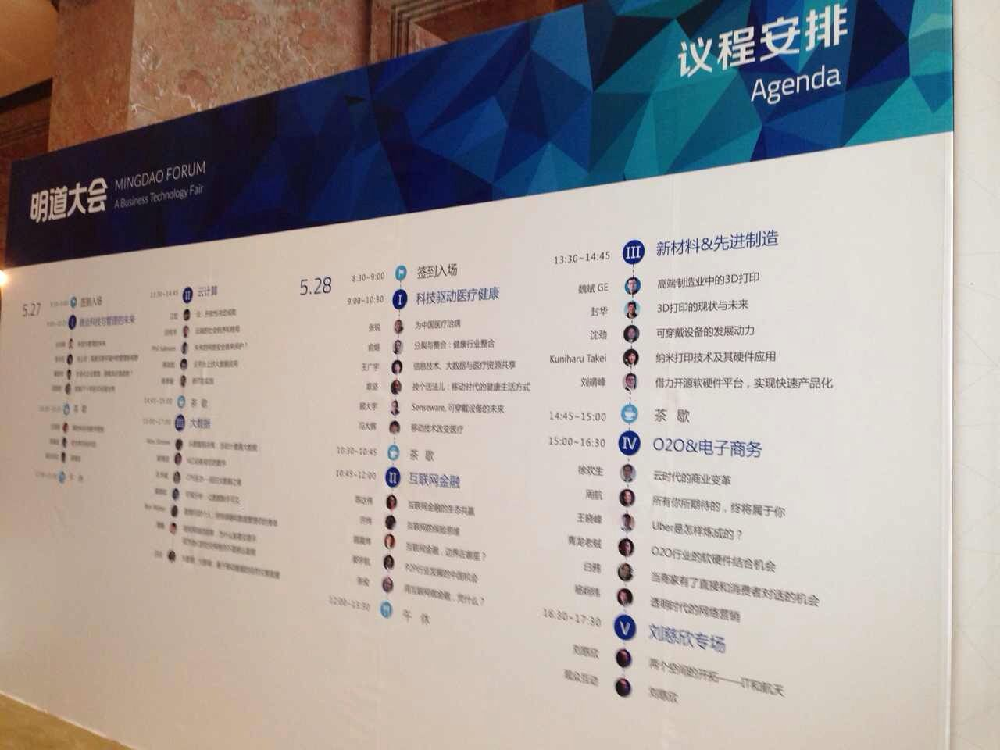
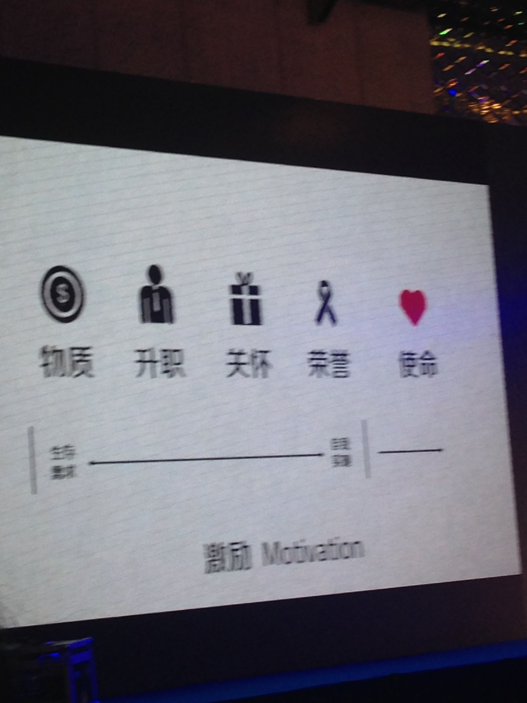
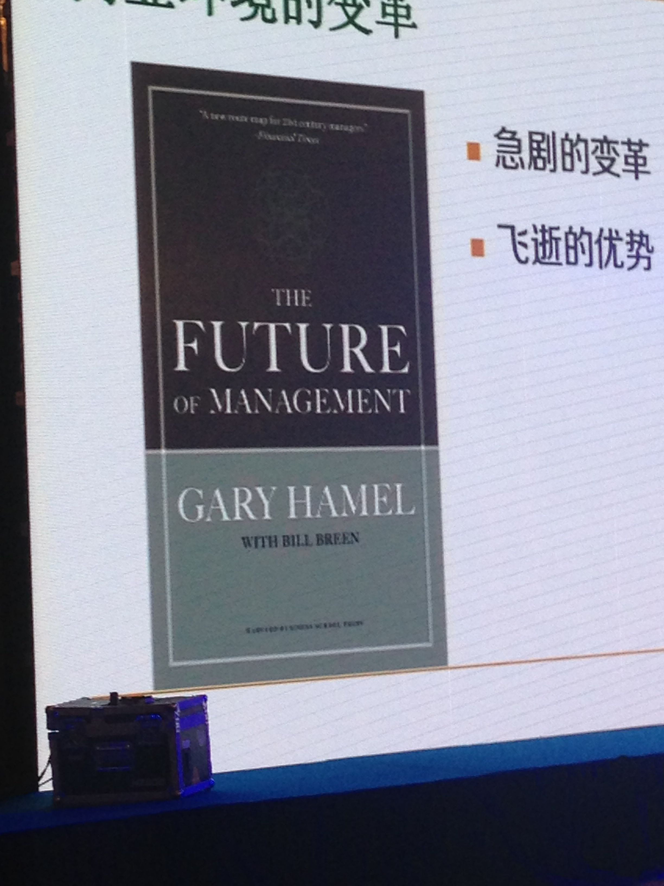
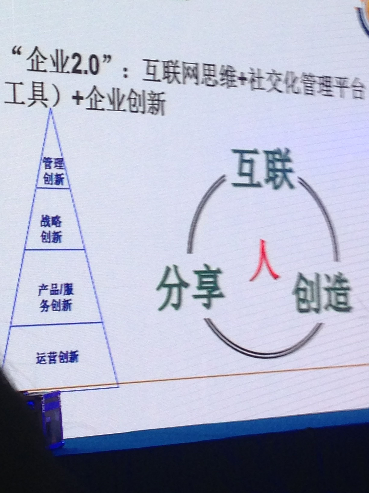
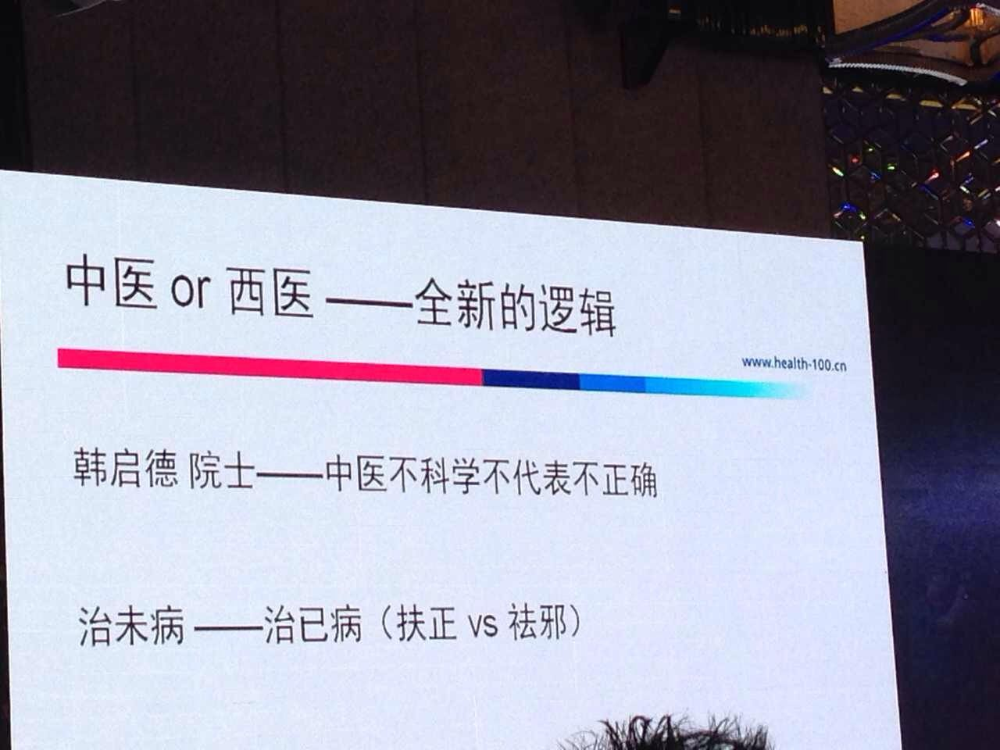
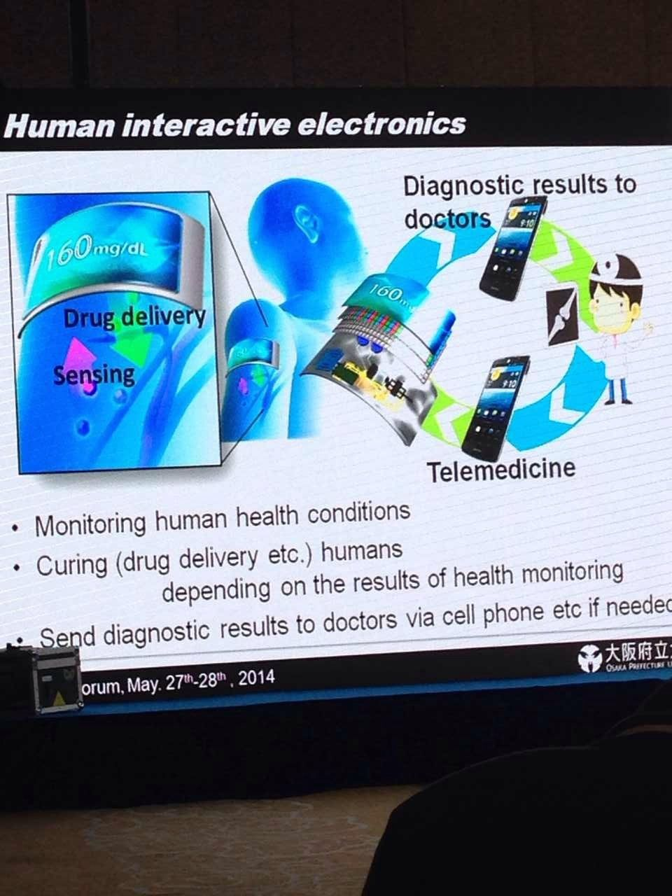
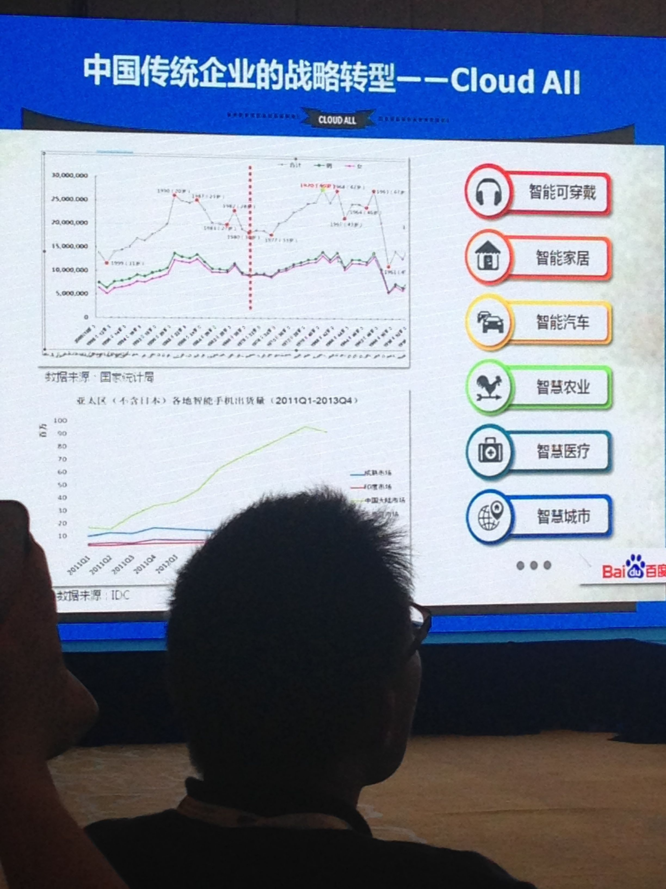
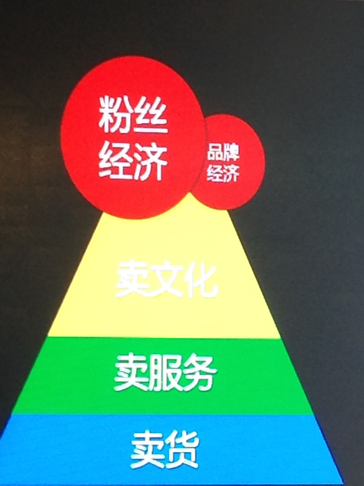

明道大会回顾
FuqiangWang

个人感受， Subject看着很牛逼，其实tmd大部分演讲者都是来做广告和营销的， 只有少数几个人晒了些干货。
当然，话又说回来了， 每个演讲者好像只给15-20分钟的样子， 也真说不了啥。
管理与未来
主办者从自己的角度阐述了对管理和科技发展的看法， 当然，就跟搞管理的大部分时候只从管理的角度来看历史，或者搞营销的只从营销角度看问题， 是一个道理。

德鲁克的21世纪的管理挑战买了还没开读那， 会上新发掘了一本管理学的书， 先mark：

关于创新:

上午的环节中，某SM公司的女士充分显示了她来这个会的明晃晃的广告目的， 赤裸裸的击碎了参会人员一开始还举得这次大会比较上“逼格”的幻想，哈哈
当然， 上午还是以吴晓波的“把世界留给80后”的演讲作了精彩的压轴， 满满的正能量！（md，哥是70后，怎么感觉到处不受待见啊？哈哈）
云计算和大数据
在这个环节，我没怎么去关注内容细节，反而去关注演讲者的表现去了，为啥？ 因为我发现做技术出身的演讲Skill明显较其他人要有所差距， 不管你是多大的title， 多么的在某个业界有名声（文笔上的居多），现场的表现相对来说还是很呆板和没有活力， 不能给人以passionate的感受；而相对来说，几个外国人虽然也是做技术的，但演讲的skill则平滑自然的多， 鉴之！
大数据层面， 不同的演讲者从数据的设备， 收集， 安全，可视化等层面阐述了不同的场景，我更多留下的是数据可视化的印象了，但其实我倒是觉得对大数据来说， question-driven big data倒是更符合我的主张。
健康医疗
演讲者从养生， 医疗， 可穿戴设备等层面阐述了各自公司在健康医疗领域的探索， 个人总结下来，互联网也好，移动互联网也罢， 到最后其实考研的都是线下资源的整合能力， 无法脱离实体经济独立发展和演化。

在此过程中， 截取了一副查图， 虽然我对中医和西医没啥研究，但我觉得这话很make sense， 单纯的站在哪一派，喷对方，更多是为己方利益做吹鼓手，并非所有东西都是可度量的，也并非所有东西就一定是互相对立的， 在《少年派的奇幻漂流》中， 少年他爹和娘明显是Rational和Emotional的象征， 你能说哪个就一定是对，哪个就一定是错？ 很多时候，需要辩证的看问题。
互联网金融
涵盖了保险，理财， P2P等领域的一些topic， 另我印象比较深刻的是， P2P企业在风控层面的一些实践还是比较值得赞赏的， 其在设备特性以及大数据的运用才真正体现了大数据的精神， 这恰好也是”市场经济”优越性之所在，在国家层面征信体系远远落后于市场需求的情况下，倒逼了企业在相应层面的创新。
新材料与科技制造
这个环节嘛，日本府立大学的纳米研究成果很吸引我的注意力:

配合可穿戴设备的理念， 在医疗和监测方面有很大的市场空间， 不过不知道是大会会场的问题还是执行人员的毛病，当这位日本的助理教授上台刚要开始的时候，系统居然崩了， 直接黑屏…（要学习人家先进的精神和科研成果，不要学习横店那帮傻叉哦）
O2O与电子商务
百度的一副人口数据图为引子展开的话题，着实切中要害， 对用户的研究俨然已经成为当今电子商务成功最基本的“立国之本”：

人口红利还有几年的玩头，后面就该跳崖了…
怎么办？

压轴：刘慈欣专场
刘慈欣是《三体》这本书的作者， 个人只听过这么本书， 没看过，等后面会找来看一下， 这个专场的主题是: 两个空间的开拓-IT和航天， 演讲者先从IT历史的演化，进而类比到航天领域， 希望航天领域能够打破现在基本上政府主导的模式， 引导民营企业进入， 刘慈欣介绍了世界各国民营企业在航天领域的探索， 最后给出了某人大代表提出的在航天领域的相关提案， 而这个人大代表就是百度的李彦宏， 到这里，@简道同学就不淡定了，说现在才意识到，相比之下，老马原来是个土鳖 =_=
不过，确实，在人类文明的探索过程中， 近个世纪泱泱大国做出的贡献实在有限， GDP倒是搞搞涨 ;)
欢迎加入「福强私学」
跨越2190个日夜，始终坚持“实践 + 原创”打造的715125字专属知识库，囊括了（但不限于）从职场、技术、管理与商业等多个板块的内容。
- 一个ChatGPT触达不到的地方
- 一个带你超越AI/人工智能的地方
- 一个与你一起成长的地方

开天窗，拉认知，订阅「福报」，即刻拥有自己的全模态人工智能。